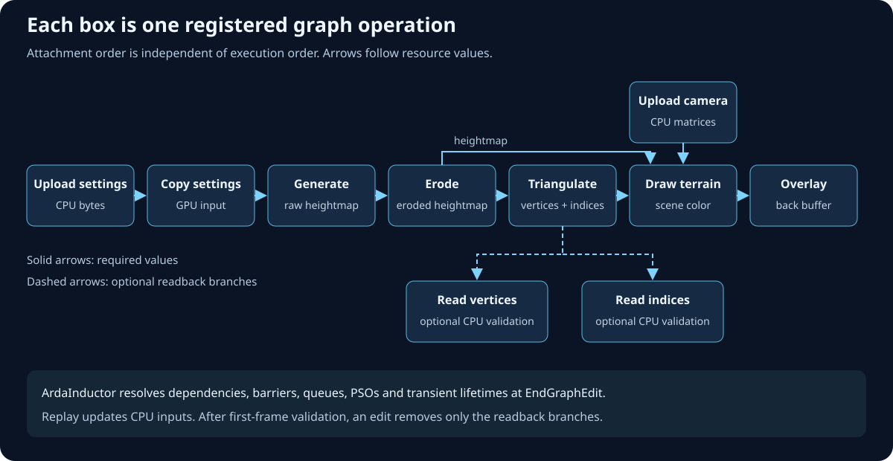
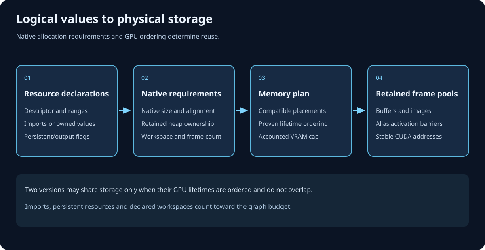
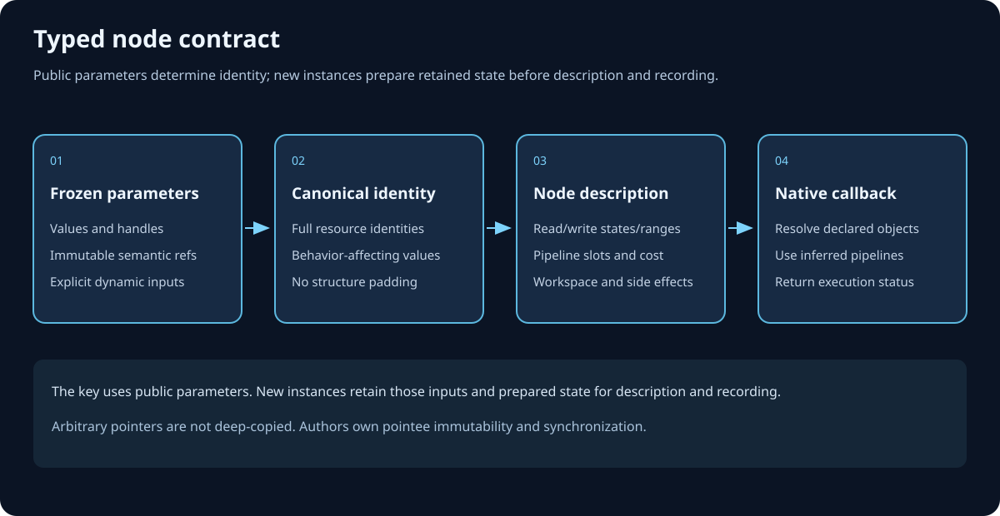
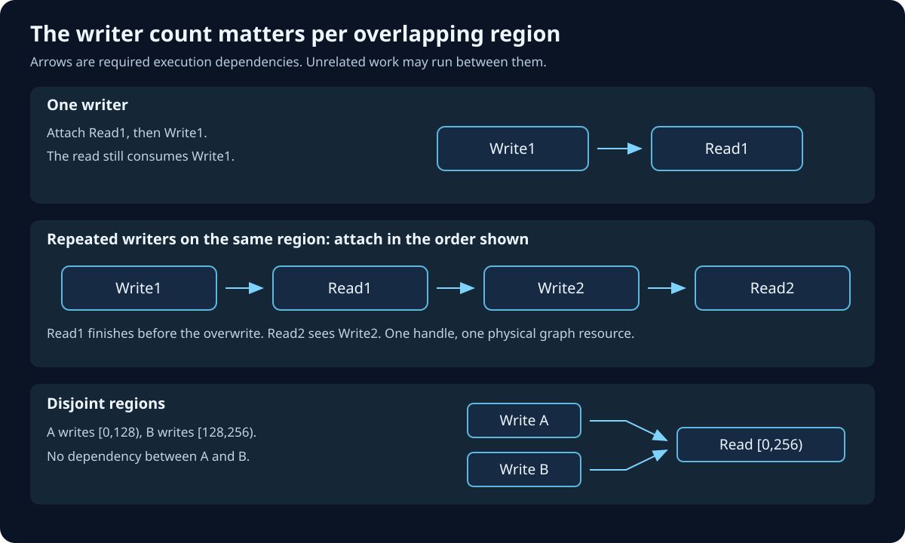
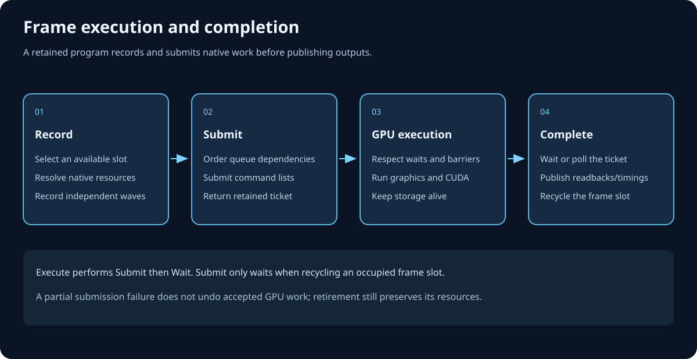

Build a useful frame, then extend it safely
ArdaRenderGraph quick user's guide
This is the practical path from an initialized backend to one submitted and presented frame. It combines upload/copy, compute, raster, and an optional hardware-ray-tracing branch while keeping every graph resource access visible to ARDG.
Objectives
After reading, a C++ graphics programmer should be able to:
- build and link a renderer against ArdaBackend and ArdaRenderGraph;
- keep backend, window, shaders, pipeline state, geometry, and ray-tracing objects alive at the correct scope;
- create exactly one
FARDGBuilderfor one frame; - acquire and import a swap-chain image, create transient resources and views, and extract retained outputs;
- declare copy, compute, raster, and acceleration-structure states before callbacks run;
- use
AddDispatchPassfor ordinary compute and genericAddPassfor ray-tracing commands; - understand specialized-queue fallback and keep hardware RT off unsupported paths; and
- follow the required
PrepareSubmit → Execute → Presentorder and diagnose failures.
Prerequisites, link targets, and includes
Be comfortable with command lists, PSOs, shader resource views, unordered-access views, framebuffers, GPU resource states, and RAW/WAR/WAW hazards. Read the Backend startup guide and presentation guide if window-system integration is new.
DEMONSTRATED. The repository's ARDGExample target links the two libraries and GLFW:
target_link_libraries(MyRenderer PRIVATE
Ardashir::ArdaBackend
Ardashir::ArdaRenderGraph
glfw
)
# Public aggregate headers:
#include "ArdaBackend.h"
#include "ArdaRenderGraph.h"
# Pipeline initializer/cache helpers used by ARDGExample:
#include "PipelineStateCache/ArdaPipelineStateCache.h"ARDGExample discovers jobs from registered shader permutations and can invoke an external DXC at startup or first use. Configure DXC through application compiler configuration, the build default, or ARDASHIR_DXC_EXECUTABLE. Run one hidden frame with --backend d3d12|vulkan --frames 1 --hidden --shader-mode ondemand --shader-cache <directory>, or explicitly cook both backends with --arda-cook-shaders <output-directory>.
Mental model: persistent renderer, disposable graph
The renderer owns durable device-facing objects. The graph owns one frame's logical declarations and frozen callback parameters. Commands are recorded only when Execute() lowers those declarations.

- Persistent: window, backend, device, swap chain, shader map or loaded shader binaries, binding layouts, pipeline initializers/cached PSOs, static geometry, and optional RT pipeline/SBT/acceleration structures.
- Per frame: acquired framebuffer, one builder, logical imports, graph-created textures/buffers/views, parameter values, pass callbacks, compile products, and execution result.
- After submission: retain queue instance values and any extracted RHI references needed by later frames; discard logical graph pointers with the builder.

Persistent setup: backend, window, shaders, and PSOs
DEMONSTRATED. Perform this once, outside the frame function:
- Create a window implementing the presentation window contract.
- Register virtual shader roots with
AddShaderSourceDirectoryMapping()before backend initialization; chooseLoadOnly,Startup, orOnDemandand a writable user shader cache. - Fill a backend configuration, enable validation while integrating, call
ConfigureBackend(), thenInitializeBackendForPresentation(). - Read the live
GetDeviceContext(); retain its device and copy its actual queue capabilities. - Initialize a
FArdaGlobalShaderMap, or create RHI shaders from backend-specific binaries. - Create input layouts and durable binding sets. Construct a
FArdaPipelineStateCacheplus compute/graphics initializers, or create a fixed graphics pipeline directly.
struct FRenderer
{
rhi::FArdaRHIDeviceRef mDevice;
render_graph::FARDGQueueCapabilities mQueues;
backend::FArdaGlobalShaderMap mShaderMap;
std::unique_ptr<backend::FArdaPipelineStateCache> mPSOCache;
// Persistent shaders and initializers used by compute/raster callbacks.
const backend::FArdaGlobalShaderInstance* mComputeShader = nullptr;
const backend::FArdaGlobalShaderInstance* mCompositeShader = nullptr;
backend::FArdaComputePipelineStateInitializer mComputePSO;
backend::FArdaGraphicsPipelineStateInitializer mCompositePSO;
// Optional RT objects, created only after capability checks.
rhi::FArdaRHIRayTracingPipelineRef mRTPipeline;
rhi::FArdaRHIShaderTableRef mShaderTable;
rhi::FArdaRHIAccelStructRef mBLAS;
rhi::FArdaRHIAccelStructRef mTLAS;
};Two metadata systems: graph access versus shader binding
This distinction prevents most first-integration mistakes.
- ARDG parameter metadata
ARDG_BEGIN_PARAMETER_STRUCT…ARDG_END_PARAMETER_STRUCTgenerates C++ members andFARDGParameterMetadata. ARDG freezes and walks it to derive dependencies, lifetimes, states, transitions, queue waits, and validated callback access.- Backend shader parameter metadata
ARDA_BEGIN_SHADER_PARAMETER_STRUCTandARDA_SHADER_*macros describe shader register slots, spaces, visibility, and binding types. The global shader map uses this metadata to make layouts; execution-context binding helpers reconcile it with the current pass's ARDG resource declarations.

// Graph contract: logical resources and required states.
ARDG_BEGIN_PARAMETER_STRUCT(FComputeParameters)
ARDG_BUFFER_SRV(mInput)
ARDG_TEXTURE_UAV(mOutput)
ARDG_END_PARAMETER_STRUCT()
// Shader contract: physical descriptor slots seen by the compute shader.
ARDA_BEGIN_SHADER_PARAMETER_STRUCT(FParameters)
ARDA_SHADER_BUFFER_SRV(mInput, 0, 0, rhi::EArdaRHIShaderStage::Compute)
ARDA_SHADER_TEXTURE_UAV(mOutput, 0, 0, rhi::EArdaRHIShaderStage::Compute)
ARDA_END_SHADER_PARAMETER_STRUCT()Rule: every graph resource used by a callback must appear in that pass's ARDG parameters even if it is also retained by the renderer or named in shader metadata. The compiler does not inspect commands inside callbacks.
Per-frame resource sequence
DEMONSTRATED. Start each frame in this order:
- Call
AcquireFrame()and verify the framebuffer has a color attachment. - Create one
FARDGBuilderfromMakeRenderGraphContext(). - Import the acquired color texture with
RegisterExternalTexture()and truthful initial statePresent. - Import durable geometry/upload/camera buffers with
RegisterExternalBuffer()and their real entry states. - Create transient storage with
CreateBuffer()andCreateTexture(). - Create the exact SRV/UAV identities needed by passes with
CreateTextureSRV(),CreateTextureUAV(),CreateBufferSRV(), andCreateBufferUAV(). - If a graph-created result must survive, queue
QueueBufferExtraction()orQueueTextureExtraction()before execution.
A view declaration is not cosmetic: callback binding validation expects the same logical view identity declared by the pass. A direct *_ACCESS member instead names the parent resource, explicit state, and optional range.
Small copyable recipes
These recipes assume the frame-owned, mutex-protected FFrameCallbackErrors callbackErrors shown in the integrated frame below. Each status-returning callback operation records its failure there; do not use a void Check helper that discards the message.
Compute: bind, then auto-dispatch
DEMONSTRATED. AddDispatchPass() forces the Compute category, invokes the setup lambda, then automatically calls Dispatch(groupX, groupY, groupZ). Do not dispatch again inside the setup callback.
FComputeParameters compute;
compute.mInput = inputSRV;
compute.mOutput = outputUAV;
graph.AddDispatchPass(
"ComputeOutput", &compute, {groupX, groupY, 1},
[this, &callbackErrors](render_graph::FARDGPassExecutionContext& context)
{
rhi::FArdaRHIComputeState state;
state.mBindings = context.CreateBindingSets(*mComputeShader);
callbackErrors.Record(
mPSOCache->SetComputePipelineState(
context.mUnsafeRawCommandList, mComputePSO, eastl::move(state)),
"ComputeOutput.SetComputePipelineState");
},
render_graph::EARDGPassFlags::AsyncCompute);Copy: declare both ends and use a copy pass
DEMONSTRATED. Copy queues accept only copy-compatible declarations. If no copy queue exists, the graph falls back to graphics.
ARDG_BEGIN_PARAMETER_STRUCT(FCopyParameters)
ARDG_BUFFER_ACCESS(mSource)
ARDG_BUFFER_ACCESS(mDestination)
ARDG_END_PARAMETER_STRUCT()
FCopyParameters copy;
copy.mSource = {source, rhi::EArdaRHIResourceState::CopySource, {}};
copy.mDestination = {destination, rhi::EArdaRHIResourceState::CopyDest, {}};
graph.AddPass(
"CopyPayload", ©, render_graph::EARDGPassFlags::Copy,
[byteCount, &callbackErrors](
render_graph::FARDGPassExecutionContext& context,
const FCopyParameters& p)
{
callbackErrors.Record(
context.mUnsafeRawCommandList.CopyBuffer(
*context.GetBuffer(p.mDestination.mBuffer), 0,
*context.GetBuffer(p.mSource.mBuffer), 0, byteCount),
"CopyPayload.CopyBuffer");
});Raster: attachment declaration plus compatible RHI state
DEMONSTRATED. ARDG_RENDER_TARGET_BINDING_SLOTS declares attachment writes. The callback still creates or reuses a compatible framebuffer, binds its PSO, shader bindings, vertex/index buffers, viewport, and scissor, then calls DrawIndexed().
ARDG_BEGIN_PARAMETER_STRUCT(FRasterParameters)
ARDG_TEXTURE_SRV(mLighting)
ARDG_BUFFER_ACCESS(mVertices)
ARDG_BUFFER_ACCESS(mIndices)
ARDG_RENDER_TARGET_BINDING_SLOTS(mTargets)
ARDG_END_PARAMETER_STRUCT()
FRasterParameters raster;
raster.mLighting = lightingSRV;
raster.mVertices = {vertices, rhi::EArdaRHIResourceState::VertexBuffer, {}};
raster.mIndices = {indices, rhi::EArdaRHIResourceState::IndexBuffer, {}};
raster.mTargets.mColor[0] = {backBuffer, acquiredSubresources};
const uint32_t indexCount = meshIndexCount; // PLACEHOLDER: actual uploaded R32 index count.
graph.AddPass(
"Composite", &raster, render_graph::EARDGPassFlags::Raster,
[this, framebuffer, width, height, indexCount, &callbackErrors](
render_graph::FARDGPassExecutionContext& context,
const FRasterParameters& p)
{
(void)context.GetTexture(p.mTargets.mColor[0].mTexture);
rhi::FArdaRHIGraphicsState state;
state.mFramebuffer = framebuffer;
state.mBindings = context.CreateBindingSets(*mCompositeShader);
state.mVertexBuffers.push_back({
rhi::FArdaRHIBufferRef(context.GetBuffer(p.mVertices.mBuffer)), 0, 0});
state.mIndexBuffer.Reset(context.GetBuffer(p.mIndices.mBuffer));
state.mIndexFormat = rhi::EArdaRHIFormat::R32UInt;
state.mViewports.push_back(
{0.f, float(width), 0.f, float(height), 0.f, 1.f});
state.mScissors.push_back(
{0, int32_t(width), 0, int32_t(height)});
callbackErrors.Record(
mPSOCache->SetGraphicsPipelineState(
context.mUnsafeRawCommandList, mCompositePSO, eastl::move(state)),
"Composite.SetGraphicsPipelineState");
context.mUnsafeRawCommandList.DrawIndexed({indexCount});
});meshIndexCount is an explicit application placeholder: set it to the number of R32UInt indices actually uploaded to indices, not the buffer's byte size, vertex count, or an assumed triangle count. Capturing the resulting value freezes the truthful draw count for this pass. When using a framebuffer created from graph-created attachments, resolve those textures with context.GetTexture() inside the callback and create the framebuffer there, as ARDGExample does. Reusing the acquired swap-chain framebuffer is valid when its attachments exactly match the declared slots.
Capability-gated hardware ray tracing
Gate setup before creating any RT-only object
TESTED API PATH. Query GetCapabilities(). mbRayTracingAccelStruct gates acceleration-structure creation; full pipeline/shader-table/dispatch setup requires mbRayTracing. Use the raster/compute fallback if either capability needed by your chosen path is false.
Persistent RT device setup
- Create BLAS and TLAS storage directly with
CreateAccelStruct(). - Create ray-generation, miss, and hit shaders. Backend tests use
CreateShaderLibrary()plusGetShaderFromLibrary()on D3D12 and stage-specific shader creation on Vulkan. - Create the direct RT pipeline and SBT; fill the ray-generation record with
SetShaderTableRayGeneration()and the corresponding miss/hit-group records required by your pipeline.
Graph declarations for RT commands
ARDG_BEGIN_PARAMETER_STRUCT(FBuildBLASParameters)
ARDG_BUFFER_ACCESS(mVertices)
ARDG_BUFFER_ACCESS(mIndices)
ARDG_ACCEL_STRUCT_ACCESS(mBLAS)
ARDG_END_PARAMETER_STRUCT()
ARDG_BEGIN_PARAMETER_STRUCT(FBuildTLASParameters)
ARDG_ACCEL_STRUCT_ACCESS(mBLAS)
ARDG_ACCEL_STRUCT_ACCESS(mTLAS)
ARDG_END_PARAMETER_STRUCT()
ARDG_BEGIN_PARAMETER_STRUCT(FTraceParameters)
ARDG_ACCEL_STRUCT_ACCESS(mTLAS)
ARDG_TEXTURE_UAV(mOutput)
ARDG_END_PARAMETER_STRUCT()Set geometry buffers to AccelStructBuildInput, BLAS/TLAS build destinations to AccelStructWrite, and acceleration structures consumed by TLAS construction or tracing to AccelStructRead. ARDG_ACCEL_STRUCT_ACCESS is direct access; the state is mandatory and must not remain Unknown.
Use generic Compute passes and the unsafe escape hatch narrowly
There is no AddRayTracingPass. Register RT work with generic AddPass(..., EARDGPassFlags::Compute, ...). Inside the callback:
- resolve graph resources through
GetBuffer(),GetTexture(), andGetAccelStruct(); - populate geometry/instance descriptors from those resolved physical objects;
- call
BuildBottomLevelAccelStruct()andBuildTopLevelAccelStruct()throughmUnsafeRawCommandList; - bind
FArdaRHIRayTracingStatewithSetRayTracingState(), then callDispatchRays().
Do not hide graph-owned geometry, AS, or output resources in captured RHI references. Doing so bypasses ARDG transition, hazard, lifetime, culling, and cross-queue analysis.
Integrated one-frame skeleton
#include <mutex>
class FFrameCallbackErrors
{
public:
void Record(const rhi::FArdaRHIStatus& status, const char* operation)
{
if (status)
return;
std::lock_guard<std::mutex> lock(mMutex);
eastl::string message(operation);
message += ": ";
message += status.mMessage;
mMessages.push_back(eastl::move(message));
}
eastl::string First() const
{
std::lock_guard<std::mutex> lock(mMutex);
return mMessages.empty() ? eastl::string{} : mMessages.front();
}
private:
mutable std::mutex mMutex;
eastl::vector<eastl::string> mMessages;
};
bool FRenderer::RenderFrame(backend::IArdaSwapChain& swapChain)
{
using namespace render_graph;
FFrameCallbackErrors callbackErrors; // Lives through graph.Execute().
rhi::FArdaRHIFramebufferRef acquiredFramebuffer;
if (!swapChain.AcquireFrame(acquiredFramebuffer))
return Fail(swapChain.GetError());
const auto& acquiredDesc = acquiredFramebuffer->GetDesc();
if (acquiredDesc.mColorAttachments.empty() ||
!acquiredDesc.mColorAttachments[0].mTexture)
return Fail("Acquired framebuffer has no color attachment.");
const auto color = acquiredDesc.mColorAttachments[0];
// One builder for this frame only.
FARDGBuilder graph(MakeRenderGraphContext(backend::GetDeviceContext()));
auto* backBuffer = graph.RegisterExternalTexture(
color.mTexture, rhi::EArdaRHIResourceState::Present, "BackBuffer");
auto* upload = graph.RegisterExternalBuffer(
mUploadBuffer, rhi::EArdaRHIResourceState::CopySource, "Upload");
auto* vertices = graph.RegisterExternalBuffer(
mVertexBuffer, rhi::EArdaRHIResourceState::AccelStructBuildInput,
"RT vertices");
auto* indices = graph.RegisterExternalBuffer(
mIndexBuffer, rhi::EArdaRHIResourceState::AccelStructBuildInput,
"RT indices");
rhi::FArdaRHIBufferDesc workDesc = MakeWorkBufferDesc();
workDesc.mDebugName = "Frame.Work";
auto* work = graph.CreateBuffer(workDesc);
rhi::FArdaRHITextureDesc lightingDesc = MakeLightingTextureDesc(
swapChain.GetWidth(), swapChain.GetHeight());
lightingDesc.mDebugName = "Frame.Lighting";
auto* lighting = graph.CreateTexture(lightingDesc);
FARDGTextureViewDesc lightingView{
lighting->GetHandle(), {0, 1, 0, 1}};
auto* lightingUAV =
graph.CreateTextureUAV("Frame.Lighting.UAV", lightingView);
auto* lightingSRV =
graph.CreateTextureSRV("Frame.Lighting.SRV", lightingView);
// DEMONSTRATED copy path: CopySource -> CopyDest.
FCopyParameters copy;
copy.mSource = {upload, rhi::EArdaRHIResourceState::CopySource, {}};
copy.mDestination = {work, rhi::EArdaRHIResourceState::CopyDest, {}};
graph.AddPass("UploadFrameData", ©, EARDGPassFlags::Copy,
[bytes = workDesc.mByteSize, &callbackErrors](
FARDGPassExecutionContext& c, const FCopyParameters& p)
{
callbackErrors.Record(
c.mUnsafeRawCommandList.CopyBuffer(
*c.GetBuffer(p.mDestination.mBuffer), 0,
*c.GetBuffer(p.mSource.mBuffer), 0, bytes),
"UploadFrameData.CopyBuffer");
});
FARDGBufferViewDesc workView{work->GetHandle(), {}};
auto* workSRV = graph.CreateBufferSRV("Frame.Work.SRV", workView);
// DEMONSTRATED compute path. AddDispatchPass dispatches after this lambda.
FComputeParameters compute;
compute.mInput = workSRV;
compute.mOutput = lightingUAV;
graph.AddDispatchPass(
"ComputeLighting", &compute,
{DivideRoundUp(lightingDesc.mWidth, 8),
DivideRoundUp(lightingDesc.mHeight, 8), 1},
[this, &callbackErrors](FARDGPassExecutionContext& c)
{
rhi::FArdaRHIComputeState state;
state.mBindings = c.CreateBindingSets(*mComputeShader);
callbackErrors.Record(
mPSOCache->SetComputePipelineState(
c.mUnsafeRawCommandList, mComputePSO, eastl::move(state)),
"ComputeLighting.SetComputePipelineState");
},
EARDGPassFlags::AsyncCompute);
const auto& caps = mDevice->GetCapabilities();
const bool useRT =
caps.mbRayTracingAccelStruct && caps.mbRayTracing &&
mBLAS && mTLAS && mRTPipeline && mShaderTable;
if (useRT)
{
// TESTED API PATH: external AS import and state transitions.
auto* blas = graph.RegisterExternalAccelStruct(
mBLAS, rhi::EArdaRHIResourceState::AccelStructRead);
auto* tlas = graph.RegisterExternalAccelStruct(
mTLAS, rhi::EArdaRHIResourceState::AccelStructRead);
FBuildBLASParameters buildBLAS;
buildBLAS.mVertices = {
vertices, rhi::EArdaRHIResourceState::AccelStructBuildInput, {}};
buildBLAS.mIndices = {
indices, rhi::EArdaRHIResourceState::AccelStructBuildInput, {}};
buildBLAS.mBLAS = {
blas, rhi::EArdaRHIResourceState::AccelStructWrite};
graph.AddPass(
"BuildBLAS", &buildBLAS, EARDGPassFlags::Compute,
[&callbackErrors](FARDGPassExecutionContext& c,
const FBuildBLASParameters& p)
{
// SYNTHESIZED: descriptor must use c.GetBuffer(...) results.
auto geometry = MakeTriangleGeometry(
*c.GetBuffer(p.mVertices.mBuffer),
*c.GetBuffer(p.mIndices.mBuffer));
callbackErrors.Record(
c.mUnsafeRawCommandList.BuildBottomLevelAccelStruct(
*c.GetAccelStruct(p.mBLAS.mAccelStruct),
{geometry},
rhi::EArdaRHIAccelStructBuildFlags::PreferFastTrace),
"BuildBLAS.BuildBottomLevelAccelStruct");
});
FBuildTLASParameters buildTLAS;
buildTLAS.mBLAS = {
blas, rhi::EArdaRHIResourceState::AccelStructRead};
buildTLAS.mTLAS = {
tlas, rhi::EArdaRHIResourceState::AccelStructWrite};
graph.AddPass(
"BuildTLAS", &buildTLAS, EARDGPassFlags::Compute,
[&callbackErrors](FARDGPassExecutionContext& c,
const FBuildTLASParameters& p)
{
// SYNTHESIZED: instance references the validated BLAS.
auto instance = MakeInstance(
*c.GetAccelStruct(p.mBLAS.mAccelStruct));
callbackErrors.Record(
c.mUnsafeRawCommandList.BuildTopLevelAccelStruct(
*c.GetAccelStruct(p.mTLAS.mAccelStruct),
{instance},
rhi::EArdaRHIAccelStructBuildFlags::PreferFastTrace),
"BuildTLAS.BuildTopLevelAccelStruct");
});
FTraceParameters trace;
trace.mTLAS = {
tlas, rhi::EArdaRHIResourceState::AccelStructRead};
trace.mOutput = lightingUAV; // UAV write after compute UAV write.
graph.AddPass(
"TraceReflections", &trace, EARDGPassFlags::Compute,
[this, width = lightingDesc.mWidth, height = lightingDesc.mHeight,
&callbackErrors](
FARDGPassExecutionContext& c, const FTraceParameters& p)
{
auto* physicalTLAS = c.GetAccelStruct(p.mTLAS.mAccelStruct);
auto* physicalOutput = c.GetTexture(p.mOutput);
// SYNTHESIZED: BindRTResources must bind these validated
// objects consistently with the persistent RT pipeline/SBT.
rhi::FArdaRHIRayTracingState state;
state.mPipeline = mRTPipeline;
state.mShaderTable = mShaderTable;
state.mBindings = BindRTResources(
*mDevice, *physicalTLAS, *physicalOutput);
callbackErrors.Record(
c.mUnsafeRawCommandList.SetRayTracingState(state),
"TraceReflections.SetRayTracingState");
callbackErrors.Record(
c.mUnsafeRawCommandList.DispatchRays(width, height, 1),
"TraceReflections.DispatchRays");
});
}
// Else: ComputeLighting remains the explicit non-RT fallback producer.
// DEMONSTRATED raster consumption and external back-buffer write.
FRasterParameters raster;
raster.mLighting = lightingSRV;
raster.mVertices = {
vertices, rhi::EArdaRHIResourceState::VertexBuffer, {}};
raster.mIndices = {
indices, rhi::EArdaRHIResourceState::IndexBuffer, {}};
raster.mTargets.mColor[0] = {
backBuffer, color.mAttachment.mSubresources};
const uint32_t indexCount = mIndexCount; // Actual uploaded R32 index count.
graph.AddPass(
"Composite", &raster, EARDGPassFlags::Raster,
[this, acquiredFramebuffer,
width = swapChain.GetWidth(), height = swapChain.GetHeight(),
indexCount, &callbackErrors](
FARDGPassExecutionContext& c, const FRasterParameters& p)
{
auto* target = c.GetTexture(p.mTargets.mColor[0].mTexture);
callbackErrors.Record(
c.mUnsafeRawCommandList.ClearTexture(
*target, p.mTargets.mColor[0].mSubresources,
{0.02f, 0.03f, 0.05f, 1.0f}),
"Composite.ClearTexture");
rhi::FArdaRHIGraphicsState state =
MakeCompositeState(acquiredFramebuffer, width, height);
state.mBindings = c.CreateBindingSets(*mCompositeShader);
state.mVertexBuffers.push_back({
rhi::FArdaRHIBufferRef(c.GetBuffer(p.mVertices.mBuffer)), 0, 0});
state.mIndexBuffer.Reset(c.GetBuffer(p.mIndices.mBuffer));
state.mIndexFormat = rhi::EArdaRHIFormat::R32UInt;
callbackErrors.Record(
mPSOCache->SetGraphicsPipelineState(
c.mUnsafeRawCommandList, mCompositePSO, eastl::move(state)),
"Composite.SetGraphicsPipelineState");
c.mUnsafeRawCommandList.DrawIndexed({indexCount});
});
backBuffer->SetFinalState(rhi::EArdaRHIResourceState::Present);
swapChain.PrepareSubmit();
const FARDGExecutionResult& submitted = graph.Execute();
if (const eastl::string callbackError = callbackErrors.First();
!callbackError.empty())
return Fail(callbackError);
if (submitted.mSubmittedCommandListCount == 0)
return Fail("Frame graph submitted no command lists.");
if (!swapChain.Present())
return Fail(swapChain.GetError());
return true;
}The declared chain is copy upload → compute UAV write → optional BLAS/TLAS build and RT UAV write → raster SRV read → back-buffer render-target write → final Present. The shared lighting texture produces the compute/RT-to-raster hazards; the AS declarations produce build/read transitions; the imported back-buffer write roots the visible chain.
graph.Execute() waits for all recording callbacks, so reading the collector immediately afterward is race-free and occurs before Present(). This error check is detection, not rollback: execution submits recorded command lists in deterministic order, and one or more submissions may already have been accepted before a callback status is inspected. Skipping Present() does not cancel that GPU work or restore the acquired image. Preserve the first status for diagnosis, retire any submitted work using the returned queue instances, and repair or recreate the presentation path as required before attempting another frame.

Queue legality and fallback
EARDGPassFlags expresses a request constrained by capabilities and states:
Rasteris graphics work.Copyuses the copy queue only when available and all declarations are copy-compatible; otherwise it falls back to graphics.ComputewithoutAsyncComputeuses graphics-capable compute.Compute | AsyncComputerequests the compute queue, but falls back to graphics if the queue is unavailable, immediate mode is active, or a state is incompatible.- RT generic passes should use
Compute. RequestAsyncComputeonly after confirming the backend supports every RT command on that queue; capability bits for RT features are not, by themselves, a promise that a distinct compute queue is a legal RT execution queue.
Fallback means queue fallback, not feature emulation. ARDG can move eligible copy/compute work to graphics. It cannot emulate hardware ray tracing. The application must omit RT passes and retain a raster/compute result when RT capabilities are absent.

Execute() reports submission, not completion.PrepareSubmit → Execute → Present
DEMONSTRATED. The order is exact:
swapChain.PrepareSubmit();
const render_graph::FARDGExecutionResult& result = graph.Execute();
if (const eastl::string callbackError = callbackErrors.First();
!callbackError.empty())
return Fail(callbackError); // Detection only; submitted work is not rolled back.
if (!swapChain.Present())
return Fail(swapChain.GetError());PrepareSubmit()makes the acquired frame ready for the application's submission path.Execute()compiles if needed, materializes, records, inserts waits, submits, and publishes extractions.Present()presents the acquired image after graph submission.
Successful execution does not mean GPU completion. Preserve the last submitted instances in FARDGExecutionResult for frame-resource retirement, or use WaitForIdle() only at conservative boundaries such as one-time upload completion and shutdown.
Failure handling and debugging
- Acquire or present returns false
- Cause: presentation/surface/resize failure. Action: read
swapChain.GetError(), stop the frame, and repair or recreate the presentation path before building another graph. - Backend, shader, pipeline, framebuffer, copy, build, state-bind, or dispatch status fails
- Cause: unsupported feature, invalid descriptor, incompatible state/layout, or backend error. Action: store every callback status failure in thread-safe frame-owned storage, inspect it immediately after
Execute(), skip presenting the bad frame, and diagnose the first error. Submission may already have occurred; this path detects failure but cannot roll it back. - Fatal check during compile
- Cause: read before produce,
Unknowndirect state, conflicting same-pass access, illegal queue state, foreign logical pointer, or mutation after building. Action: fix declarations and create a fresh builder. - Fatal check from a context getter
- Cause: callback requested a resource or exact view absent from its frozen parameters. Action: add the access to the parameter struct and resolve it through the matching frozen member.
- RT path fails while fallback works
- Cause: incomplete capability gate, malformed shader exports/SBT, geometry descriptor mismatch, hidden captured resource, or unsupported queue. Action: force graphics-pipeline execution, disable parallel recording, validate direct Backend RT calls independently, then reintroduce graph transitions.
- Pass never records
- Cause: culling found no path to an external write, extraction, or deliberate
NeverCullside effect. Action: useDumpGraph()and model the real output; do not useNeverCullmerely to hide a missing dependency. - Extracted object exists but CPU data is stale
- Cause: submission was mistaken for completion. Action: wait on the relevant submitted queue instance or use device idle at a deliberately conservative boundary.
Start integration with Backend validation enabled. Use ARDG debug options: immediate mode for serial execution, conservative barriers to expose ordering assumptions, extended lifetimes for premature-release suspicion, and first-write clobbering for uninitialized-read diagnosis. Call Compile() and DumpGraph() before execution when you need a deterministic plan report.
Cleanup and lifetime order
Every frame
- Keep extraction destination variables alive through
Execute(). - Copy required submitted queue instances and extracted RHI references into durable frame state.
- Let the builder die after submission; never retain its logical pointers, views, parameter pointers, handles, compile result, or blackboard references.
- Retire per-frame CPU and external resources only after their submitted GPU work completes.
Resize
- Finish or safely retire work touching old swap-chain images.
- Call swap-chain resize outside a live graph.
- Recreate persistent framebuffer-size-dependent resources and pipeline state if their compatibility descriptors changed.
Shutdown
- Stop producing frames and wait for swap-chain/device idle.
- Destroy builders and per-frame state.
- Release RT SBT/pipeline/AS, raster and compute PSOs, binding sets, shaders, buffers, textures, shader map, and in-memory pipeline cache.
- Destroy the swap chain and window integration objects.
- Call
ShutdownBackend()while the process context still owns the device so dirty D3D12/Vulkan pipeline data is atomically flushed and persistence is disabled; then release any retained device reference.
Curated common API-path checklists
These are task paths, not an API dump. Every link opens the canonical stable entry.
Start and present one graph frame
InitializeBackendForPresentationGetDeviceContext→MakeRenderGraphContextAcquireFrame→RegisterExternalTexturePrepareSubmit→Execute→Present
Create, view, use, and retain a resource
CreateTextureorCreateBufferFARDGTextureViewDesc/FARDGBufferViewDescARDG_TEXTURE_SRV,ARDG_TEXTURE_UAV,ARDG_BUFFER_SRV, orARDG_BUFFER_UAVCreateBindingSetsQueueTextureExtractionorQueueBufferExtraction
Compute and raster
AddDispatchPass→SetComputePipelineState→ automatic dispatchARDG_RENDER_TARGET_BINDING_SLOTS→AddPasswithRasterSetGraphicsPipelineState→Draw/DrawIndexed
Capability-gated ray tracing
GetCapabilities→ checkmbRayTracingAccelStructandmbRayTracingCreateAccelStruct→RegisterExternalAccelStructARDG_ACCEL_STRUCT_ACCESSplus bufferAccelStructBuildInputdeclarations- generic Compute
AddPass→ validated context getters →BuildBottomLevelAccelStruct/BuildTopLevelAccelStruct CreateRayTracingPipeline→CreateShaderTable→SetRayTracingState→DispatchRays
Summary and next steps
- Keep the renderer persistent and each graph disposable: one builder, one frame, one execution.
- ARDG parameter metadata declares scheduling and state; Backend shader metadata declares descriptor bindings.
- Use automatic dispatch for ordinary compute, explicit copy-compatible states for copy, and attachment slots plus full graphics state for raster.
- RT is an explicit escape-hatch integration: capability gate it, import acceleration structures, declare every AS and buffer state, use validated context getters, and issue direct RHI commands from generic Compute passes.
- Specialized queues can fall back to graphics; unsupported hardware RT must fall back to another rendering algorithm.
- Prepare the swap chain before graph execution, present after submission, and synchronize separately before CPU reuse or destruction.
Reader checkpoints
- Why does an RT geometry buffer need an ARDG access declaration even when a geometry descriptor already holds an RHI reference?
- Which part of
AddDispatchPassrecords the dispatch call? - Why can an
AsyncComputerequest execute on graphics? - What observable output keeps the integrated frame's producer chain live?
- What does a successful
Execute()prove, and what does it not prove?
Next steps
- Build and run
ARDGExample --backend vulkan --frames 1 --hiddenand, on Windows, repeat with D3D12. - Read Passes and parameter declarations for binding validation and Execution for recording/submission behavior.
- Use Debugging while adding your first pass, then inspect
DumpGraph(). - Prototype RT first through direct Backend tests, then connect it to ARDG declarations exactly as labeled in this guide.